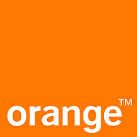

TP1 - CV

| Fofana Ibrahima | Célibataire |
| 93 Epinay-sur-Seine | Permis B - Véhiculé |
| 07 53 57 08 61 | |
| fofanaibrahimah@gmail.com |
administrateur systèmes et reseaux
| 2018 - 2020 | Master 3IR à l'université Paris XIII |
| 2017 - 2018 | Licence Sciences Pour L'ingénieur |
| 2016 - 2017 | Licence Professionnelle Nanotechnologie |
Compétences
| Développement | JAVA 7, HTML5/CSS3 |
| Bases de données | MySQL, PostgreSQL |
| Réseaux | IPV6, LAN, WIFI |
| Langues | Anglais: courant, Français: langue maternelle |
Expériences
| 2018 | Stage 3 mois chez |
| 2017 | Stage 5 mois chez Conceptel and Co |
| 2016 | CDI Technicien Réseaux Télécoms chez  |
Centre d'intérêts
| Sport | Pratique quotidienne de football |
| Culture | interêt pour la théologie |
| Documentaire | vie d'animaux forestiers et aquatiques |